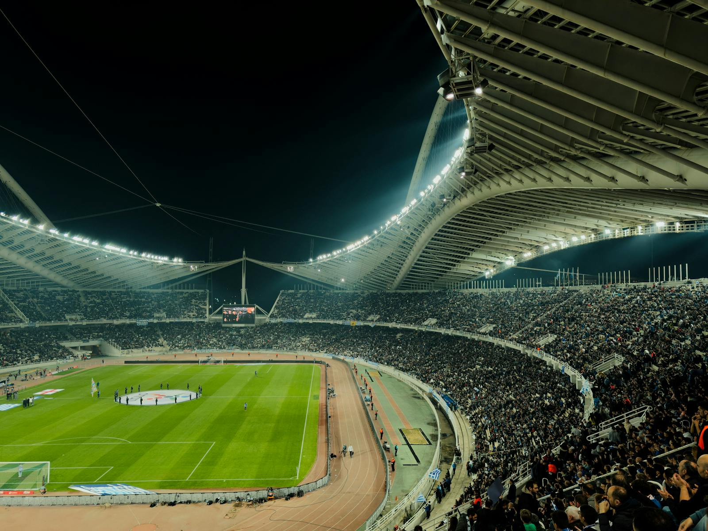

Pre-Match Content
Story-Hooks, Countdown, Spielerbezug und Heimspiel-Stimmung sorgen für Reichweite und Relevanz.
Projekt 03 · Campaigning
Ein Funnel-Modell für Heimspieltage: Content aktiviert Reichweite, Angebote werden passend getimt und Traffic wird gezielt auf Shop- und Aktionsseiten geführt. So entsteht ein sauberer Weg vom Spieltags-Impuls bis zur Conversion.

Funnel-Logik
Story-Hooks, Countdown, Spielerbezug und Heimspiel-Stimmung sorgen für Reichweite und Relevanz.
Merch-Bundles, Top-Seller und klare Botschaften mit sofort sichtbarem Nutzen schaffen Kaufinteresse.
Saubere Weiterleitung auf Kategorie-, Produkt- oder Aktionsseiten ohne Reibung und ohne Ablenkung.
Kaufimpulse über Timing, Sichtbarkeit, Verknappung und klare Call-to-Actions.
Ablauf
Vorbereitung über Social-Teaser, Vorfreude, Produkt-Inszenierung und erste Traffic-Signale.
Fokus auf Highlight-Produkte, Aktionsangebote, Bundles und sichtbare Hooks für Fans mit Kaufabsicht.
Hohe Sichtbarkeit für passende Angebote, emotionale Kommunikation und Conversion-starke Shop-Flächen.
Retargeting, Nachfass-Kommunikation und Auswertung von Reichweite, Klicks und Verkäufen.
Erweiterung
Stories, Reels und Matchday-Posts setzen den emotionalen Einstieg und leiten auf Shop-Ziele weiter.
Traffic läuft auf sauber strukturierte Landingpages, Kategorien oder Hero-Produkte mit höherer Kaufwahrscheinlichkeit.
Interessierte Fans können über Newsletter- oder Social-Funnel-Strecken später erneut aktiviert werden.